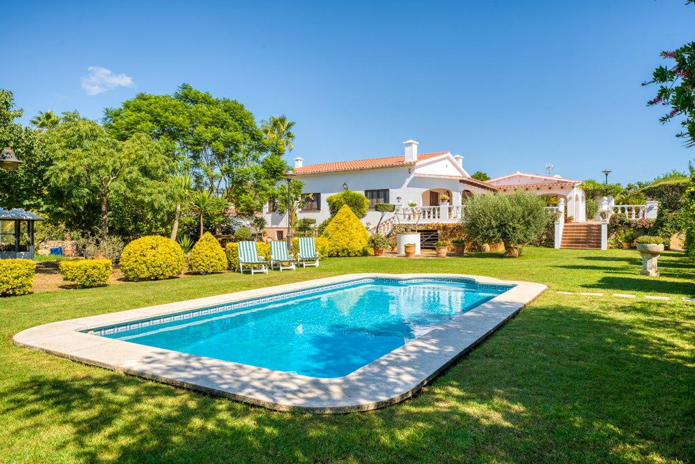

€940.000
Near Alaior, L'Argentina, Menorca
Open the listingExact cozy-character brief: living-room fireplace, native-plant gardens with vegetable patch, fruit trees, pond and hen house, summer kitchen/BBQ and a large private pool on nearly 2,700 m² near Alaior. Habitable now — punches above typical island pool-villa pricing under €1M.
Opened 5 Sep 2026. Asking €940,000. E&V Property ID W-02PXM9. Specs: 3 bed / 2 bath / ~298 m² / ~2,704 m² / year 1986 / heat pump. Basement and garage convertible to guest/studio. Not board alaior (W-048PSR).